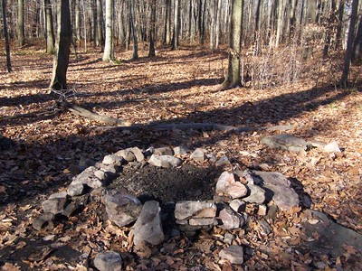

The Woods (Redux)

From Flickr, "Fire Pit at Allegany National Forest". Andy Arthur 2010 source
A young boy is on a hike in the woods behind his grandparents house. He sits on a log at the bottom of a large hill, not too far from the house. He's got a couple hours until thanksgiving dinner is ready. To his left sits a giant fallen tree, and to his right is a small creek. The boy gets up and:
Walks towards the fallen tree.
Walks towards the creek.